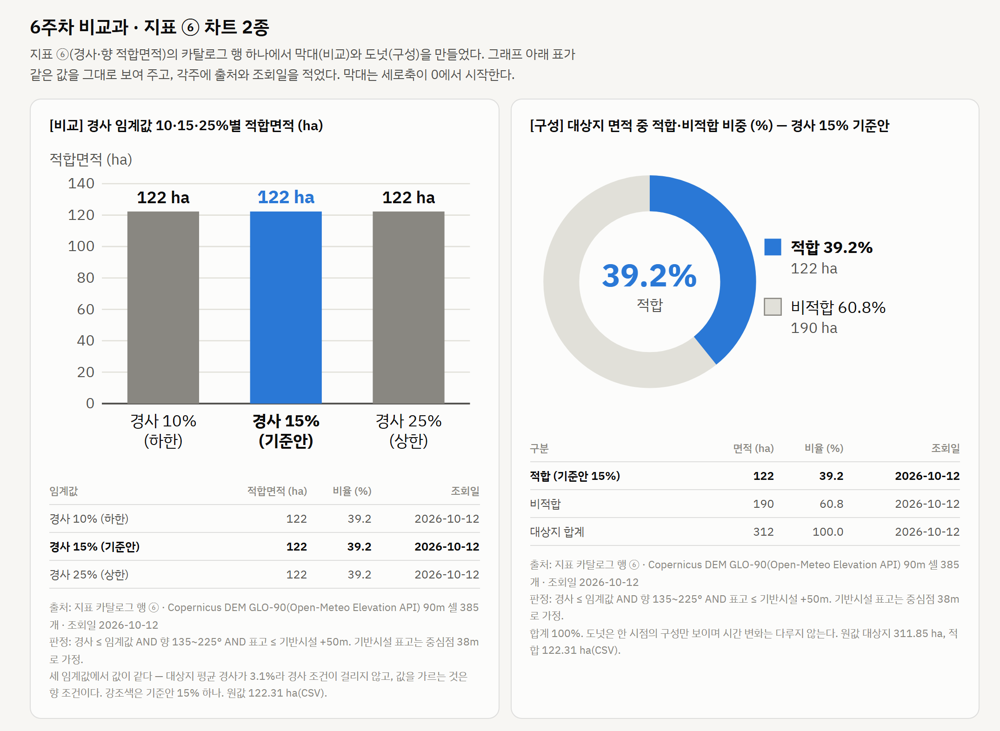
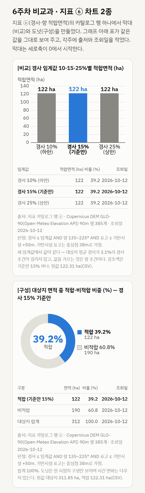

| 점검 | 결과 | 한 줄 기록 |
|---|---|---|
| 거리 | 미확인 | 강의실 뒷줄에서 제목·축·값이 읽히는지는 팀원 확인 대기. 대신 휴대전화 폭에서 글자 12.7 px 이상임을 측정. |
| 색 | 통과 | 강조색은 기준안 15% 막대 하나뿐, 나머지는 회색. 색이 없어도 "(기준안)" 라벨과 굵은 글씨로 구분. |
| 폭 | 통과 | 375 px 폭에서 축 라벨이 겹치지 않고 막대가 유지되며 가로 스크롤 없음(production 주소에서 측정). |
| 값 | 통과 | 막대 122 ha = 표 122 = CSV 122.31 ha(정수 표기로 통일), 비율 39.2%. 원값은 각주에 적음. |
| 출처 | 통과 | 각주에 행 ⑥ · Copernicus DEM GLO-90 · 조회일 2026-10-12 · 수업 지정 DEM이 아니라는 점 · 기반시설 표고 가정(38 m) 명시. |
미통과 항목: 거리 (팀원 확인 대기) · 팀 채팅 한 줄: "지표 ⑥ 막대·도넛 · 점검자 임성아 · 미통과 거리".
통과 — 전체 커밋 기록과 올린 파일에서 키 형식 문자열 0건이고 코드에는 환경변수 이름 VWORLD_KEY만 있다. 요청 기록 파일에는 key=***로 가려 저장한다. (2026-10-12)
